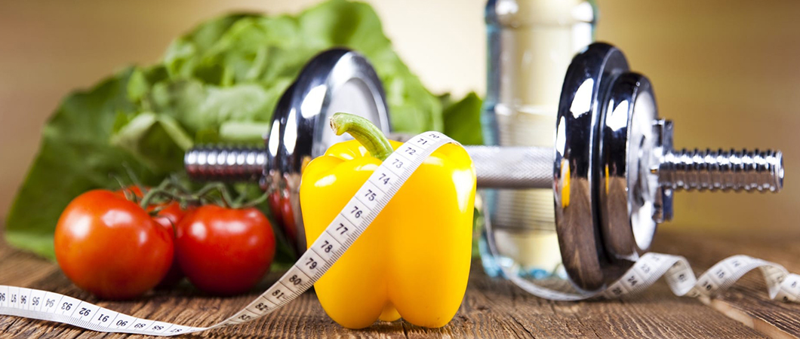
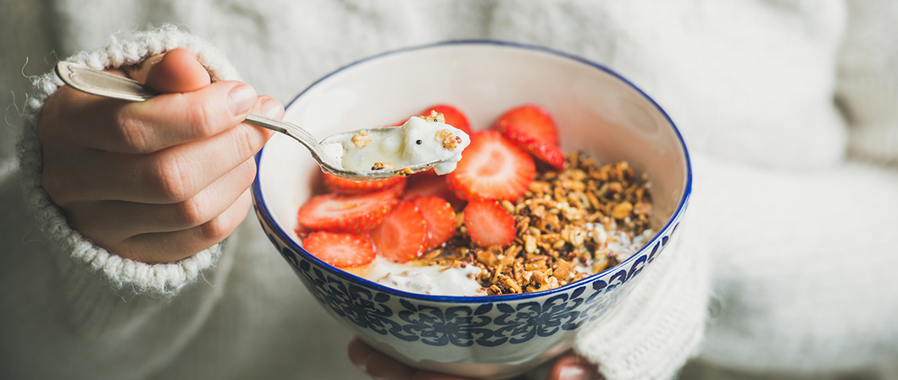
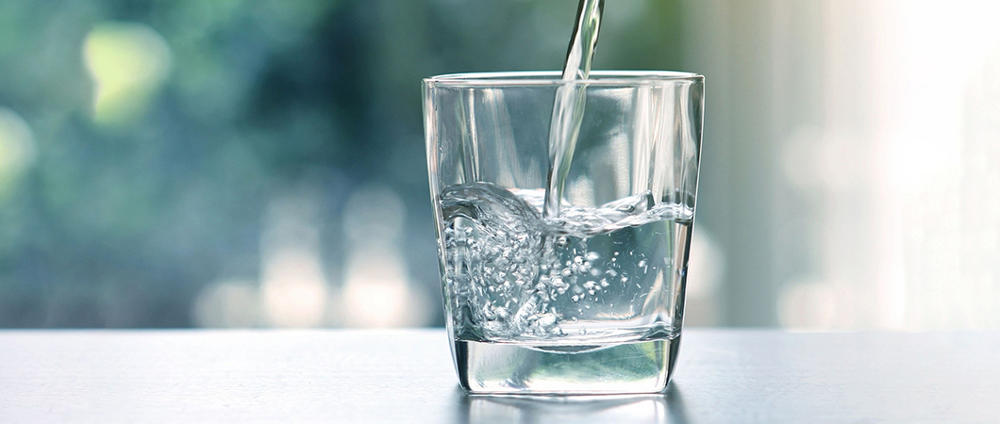
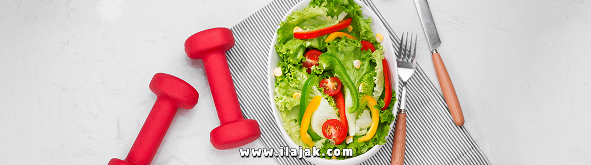

الغذاء الصحي
كل ما يهمُّ معرفته عن الأغذية الصحيَّة، ومركِّباتها الغذائية، وفوائد الأطعمة بأنواعها، وأخطار الإكثار منها، وغيرها من المعلومات الغنيَّة، تجدونها في مقالاتنا التالية

طرق الحفاظ على الوزن المثالي في الحجر المنزلي
جدول المحتويات
أثر الحجر الصحي والمنزلي على الأنظمة الغذائية
نظراً لأن البلدان تتخذ أشدالسمنة التدابير لاحتواء انتشار فيروس كورونا، فإن الحجر الصحي أو المنزلي وإغلاق الشركات قد يؤثران على الممارسات الغذائية المعتادة وذلك لان المطاعم وعروض الوجبات أصبحت محدودة في بعض البلدان، بالإضافة إلى نقص في بعض العناصر الطازجة.
التغذية الجيدة أمر بالغ الأهمية للصحة، خاصة في الأوقات التي قد يحتاج فيها جهاز المناعة للدفاع، وقد تحد صعوبة الوصول إلى الأطعمة الطازجة من فرص الاستمرار في نظام غذائي صحي ومتنوع، ويمكن أن تؤدي أيضاً إلى زيادة استهلاك الأطعمة المعالجة، والتي تميل إلى أن تكون عالية في الدهون والسكريات والملح ومع ذلك، حتى مع المكونات القليلة والمحدودة، يمكن للمرء الاستمرار في نظام غذائي يدعم صحة جيدة.
اكتساب الوزن في فتره الحجر الصحي
بحسب أخصائيي التغذية، فالحفاظ على المواعيد المحددة لتناول الفطور والغداء والعشاء في الأوقات الاعتيادية هو أحد أهم الامور التي يمكنك القيام بها وأحد أكبر الأخطاء التي يمارسها الناس أثناء هذا الحجر هو عدم الالتزام بمواعيد نومهم المعتادة.
الحفاظ على نمط حياة منتظم هو المفتاح لتجنب زيادة و اكتساب الوزن بالإضافة إلى ذلك فأن من أهم الامور هو الحفاظ على شرب الماء.
تعرف خدمات علاجك الطبية لعلاج السمنة : تقنيات عمليات السمنة في تركيا
العمل من المنزل يسبب السمنة
نعلم أن العمل من المنزل يمكن أن يكون ضاراً بصحتنا البدنية كما أنه يمثل تحدياً للصحة العقلية.
فالأشخاص الذين يعملون من المنزل أكثر عرضة للسمنة ومرض السكري بسبب انخفاض كبير في النشاط البدني ،وزيادة في تناول الطعام طوال اليوم وهو سلوك شائع لأولئك الذين يعملون من المنزل والذي يمكن أن يؤدي إلى زيادة الوزن بالاضافة إلى أنه عندما تعمل من المنزل فأنت أمام توفر وتنوع كبير من الأطعمة على عكس المكتب حيث يتوفر البسكويت أو آلة صنع الشاي والقهوة فقط.
زيادة الوزن بسبب قلة الحركة
يعتبرعدم ممارسة الرياضة والنشاط البدني عاملاً مهماً يؤدي إلى السمنة, كثير من الناس لديهم وظائف مكتبية فهم ملزمون بالجلوس في مكتب معظم اليوم, وكثير من الناس يعتمدون على سياراتهم بدلاً من المشي أو ركوب الدراجات.
يميل الكثير الأشخاص إلى مشاهدة التلفاز أو تصفح الإنترنت أو ممارسة الألعاب الالكترونية، وقد لا يمارسون الرياضة بانتظام.
إذا لم تكن نشطاً بما فيه الكفاية، فأنت لا تستخدم الطاقة التي يوفرها الطعام الذي تتناوله، ويتم تخزين السعرات الإضافية كدهون بدلاً من ذلك.
يُنصح البالغون بممارسة ما لا يقل عن ساعتين إلى ثلاث ساعات من النشاط المعتدل (على سبيل المثال ، ركوب الدراجات أو المشي السريع) في أسبوع سيساعدك ذلك على الحفاظ على وزن صحي.
اقرأ اكثر : الغذاء الصحي ودوره في علاج السمنة
طرق الحفاظ على الوزن المثالي
مع التقدم في العمر، إذا واصلت تناول نفس أنواع وكميات الطعام دون زيادة أوالحفاظ على النشاط ، فمن المحتمل أن يزيد وزنك وذلك لأن عملية الأيض تصبح ابطأ مع تقدم العمر، وقد يختلف تكوين جسمك (كمية الدهون والعضلات) عما كان عليه عندما كنت أصغر سناً.
يمكن أن تؤثر أشياء كثيرة على وزنك ، بما في ذلك العوامل الوراثية، والعمر، والجنس، وأسلوب الحياة، والعادات الأسرية، والنوم، وحتى المكان الذي تعيش فيه وتعمل فيه فبعض هذه العوامل يمكن أن تجعل من الصعب فقدان الوزن أو الحفاظ على الوزن.

لكن النشاط واختيار الأطعمة الصحية له فوائد عامة - بغض النظر عن العمر أو الوزن.
من المهم اختيار الأطعمة الغنية بالعناصر الغذائية وأن تكون نشطاً لمدة 150 دقيقة على الأقل أسبوعياً وهناك 3 عوامل رئيسية وجوهرية لذلك الا وهي:
- لكي تحافظ على وزنك كما هو، عليك حرق نفس السعرات الحرارية التي تتناولها وتشربها.
- لفقدان الوزن، قم بحرق سعرات حرارية أكثر مما تأكل وتشرب.
- لاكتساب الوزن، احرق سعرات حرارية أقل مما تأكل وتشرب.
الرياضة الصباحية
يمكن أن تساعدك ممارسة التمارين الخفيفة مثل المشي حول منطقتك أو التمارين المكثفة مثل الجري أو الركض على الاسترخاء وإعادة التركيز وفقاً للباحثين، فإن التمارين تقوي قدرات الدماغ في الوظيفة التنفيذية، بما في ذلك قدرتك على التفكير في المستقبل والقدرة على الكبت، سيسهل ذلك التوقف عن التفكير في الجوع.
جرب ممارسة اليوغا يمكن لليوغا أن تساعدك في التعامل مع مغريات الطعام وأن تكون أكثر عقلانية في تناول الطعام.
اقرأ أكثر : ما هو الطب الرياضي؟
الانتظام في النوم
احصل على ثماني ساعات من النوم كل ليلة، يمكن أن يؤدي الحرمان من النوم إلى تناول الوجبات الخفيفة والإفراط في تناول الطعام. يمكن أن يقلل النوم الجيد في الليل من مستويات الكورتيزول، وهو الهرمون الذي يرتفع عندما تشعر بالقلق أو التوتر تجنب الإجهاد من خلال النوم لمدة ثماني ساعات كل ليلة.
الوجبات الخفيفة
تناول وجبة خفيفة صغيرة، على سبيل المثال لا الحصر اللوز أو الأفوكادو فتناول حفنة من اللوز النيء سيغذي جسمك بمضادات الأكسدة وفيتامين E والمغنيسيوم كما ثبت أن اللوز يزيد من الشعور بالامتلاء ويساعد في التحكم في الوزن.
الأفوكادو مليء بالدهون الصحية الأحادية غير المشبعة، والتي تستغرق وقتاً طويلاً ليهضمها الجسم ويمكن أن تساعد في قمع وكبت شهيتك كما أنها مصدر ممتاز للألياف القابلة للذوبان، والتي تشكل هلاماً سميكاً أثناء انتقالها عبر أمعائك، مما يبطئ عملية الهضم.

قطّع ثمرة الأفوكادو ورش القليل من العسل عليها إذا كنت تحبه، أو رش الملح والفلفل، بالإضافة إلى عصر الليمون للحصول على وجبة خفيفة لذيذة.
شرب الماء
شرب الماء يساعد في تقليل الشهية ارتشف الماء وحافظ على رطوبتك طوال اليوم لمنع معدتك من الشعور بالجوع والحفاظ على الشعور بالشبع.

يمكنك أيضاً شرب الماء الساخن مع الليمون أو شاي الزنجبيل الساخن حيث يستخدم الزنجبيل منذ قرون كداعم للجهاز الهضمي، ويمكن أن يساعد في تهدئة معدتك، فإذا كنت تعاني من آلام الجوع ارتشف شاي الزنجبيل الساخن.
شتت عقلك عن الطعام
إذا وجدت نفسك جائعاً بعد تناولك الطعام، فقد تحتاج إلى إيجاد طرق لإبعاد ذهنك عن تناول الطعام في كثير من الأحيان، عندما نشعر بالملل نشعر بالجوع ونبدأ بتناول الوجبات الخفيفة، حارب هذا الملل من خلال التركيز على ممارسة الأنشطة وتعديل نمط حياتك اليومي لتجنب الجوع.
ابتعد عن تناول الحلويات
توصي منظمة الصحة العالمية بأن يكون إجمالي استهلاك الطاقة للبالغين من السكريات أقل من 5٪ (حوالي 6 ملاعق صغيرة). إذا كنت تتوق إلى شيء حلو فيجب أن تكون الفاكهة الطازجة هي الأولوية دائماً، وتعتبر الفواكه المجمدة والفواكه المعلبة بدلاً من الشراب والفواكه المجففة الخالية من السكر خيارات جيدة أيضاً.

عند اختيار الحلوى، تأكد من أنها قليلة السكر واستهلك كميات قليلة واحترس من الخيارات قليلة الدهون، لأنها غالباً ما تكون غنية بالسكريات المضافة قلل من كمية السكر أو العسل المضافة إلى الأطعمة وتجنب تحلية المشروبات.
اقرأ أكثر : فوائد الشاي الأخضر للوقاية من أمراض القلب والسكتة الدماغية
تقليل المشتريات
لاحظت منظمة الصحة العالمية التابعة للاتحاد الأوروبي حالات متزايدة من الشراء الزائد، قد يكون لسلوك الشراء بذعر نتائج سلبية ، مثل ارتفاع أسعار المواد الغذائية، والاستهلاك المفرط للأغذية والتوزيع غير المتكافئ للمنتجات، لذلك من المهم مراعاة احتياجاتك الخاصة وكذلك احتياجات الآخرين.
قم بتقييم ما لديك بالفعل في المنزل وقم بتخطيط لاحتيجاتك الغذائية، قد تشعر بالحاجة إلى شراء كميات كبيرة من الأطعمة، ولكن تأكد مما هو موجود بالفعل لديك من طعام واستخدامه، بهذه الطريقة يمكنك تجنب هدر الطعام والسماح للآخرين بالوصول إلى الطعام الذي يحتاجونه.


اطلع على أحدث المنشورات والأخبار الطبية
عمليات شفط الدهون بالفيزر في تركيا والأسعار 2021
يعتبر شفط الدهون بالفيزر من أفضل عمليات علاج السمنة المفرطة. تعرف معنا على مميزات وعيوب شفط الدهون بالفيزر وكيف تتم العملية وشاهد الفرق قبل وبعد في تركيا.
طرق علاج طول النظر في تركيا وأحدث التقنيات
يعاني الكثير من كبار السن وحتى البالغين من مرض طول النظر . سنتحدث في هذا المقال عن كيفية علاج طول النظر وأسباب هذا المرض ونسبة نجاح العلاج .
الفرق بين زراعة الشعر في ايران وتركيا 2021
بالرغم من أن أسعار زراعة الشعر بين تركيا وايران لا تختلف كثيرا إلا أن هنالك الكثير من الفروق التي قد تحدد لك الدولة الأفضل لزراعة الشعر فيها.
طرق علاج قصر النظر في تركيا وأحدث التقنيات
يعاني الكثير من الأطفال وحتى البالغين من مرض قصر النظر. سنتعرف في هذا المقال على أفضل طرق علاج قصر النظر وأسباب هذا المرض ونسبة نجاح العلاج .